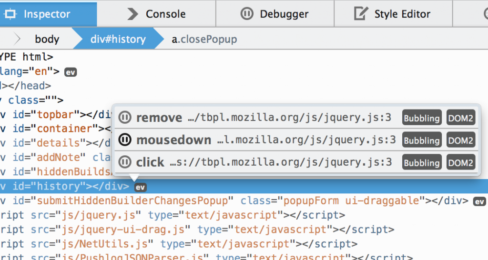
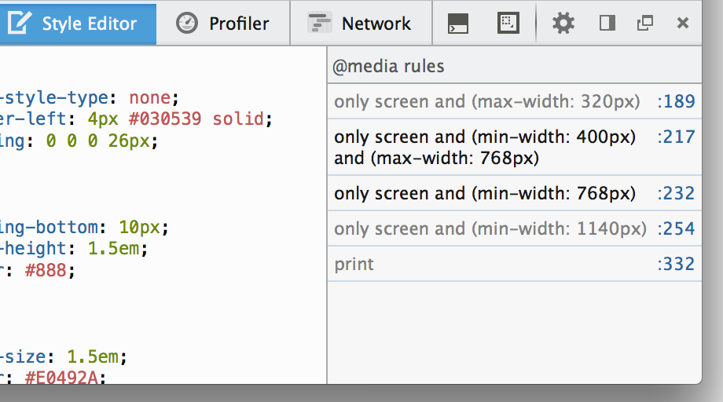
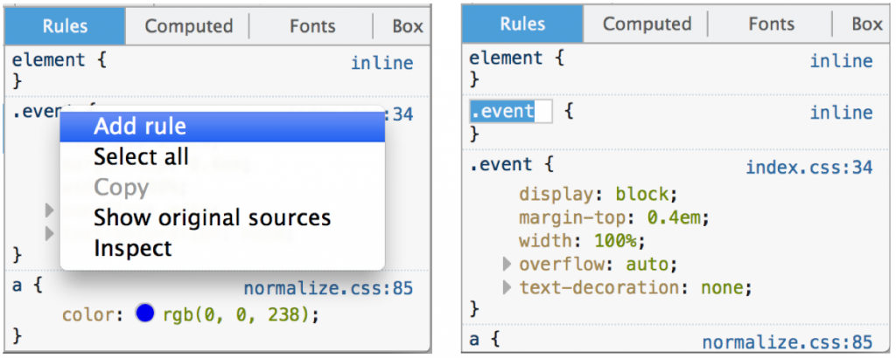
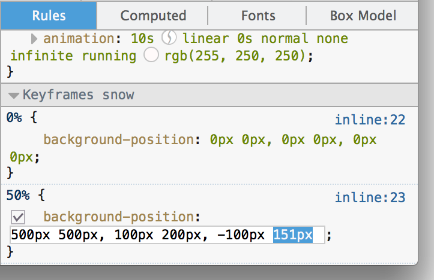
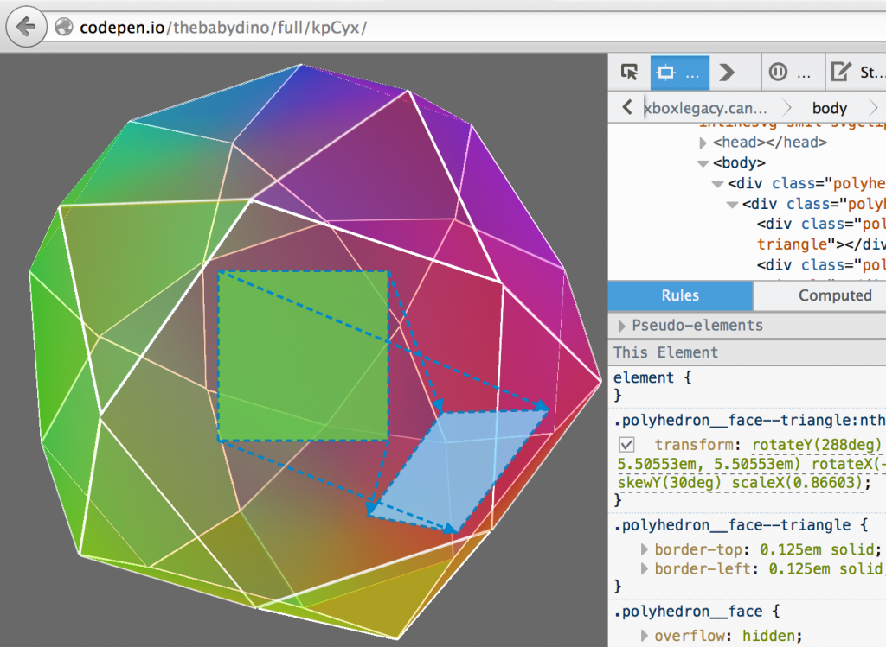

事件監聽器彈出型視窗、@media 側邊列、Cubic bezier 編輯器，還有更多功能
新的開發者工具已經進入 Firefox 曙光版 (Aurora) 釋出頻道，並即將在 10 月發佈的 Firefox 33 正式現身。這次特別針對「檢測器 (Inspector)」提供多項新功能：
事件監聽器 (Event Listener) 彈出型視窗
任一節點若附加了 JavaScript 事件監聽器 (Event listener)，檢測器 (Inspector) 就會在該節點旁顯示「ev」圖示。只要點擊該圖示，隨即列出該元素附加的所有事件監聽器。若點擊「暫停」圖示，就會進入除錯器 (Debugger) 中的函式，方便開發者設定中斷點並進一步除錯 (可參閱開發討論記錄與他人在 UserVoice 提出的需求)。

另請留意「除錯器 (Debugger)」中的事件窗格，其內將列出該頁面上的所有事件監聽器。
「@media」側邊欄
針對開發者現正編輯的樣式表 (或 Sass 原始碼) 之中所有 @media 規則，「樣式編輯器 (Style Editor)」可透過新的側邊欄進一步列出捷徑。點擊任一項目就會跳到該規則。如果該媒體查詢目前無法套用，則該規則的條件內容均顯示為灰色。此功能可妥善搭配「適應性設計檢視模式(Responsive Design View)」(Opt+Cmd+M / Ctrl+Shift+M)，順利建立行動裝置所適用的版面並除錯(可參閱開發討論記錄)。

添增新規則
只要在檢測器的「規則」區塊中按下滑鼠右鍵，就會看到「新增規則 (Add Rule)」選項。點選之後即可添增新的 CSS 規則，且所產生的 CSS 選擇器 (Selector) 將符合目前所選的節點 (可參閱開發討論記錄與他人在 UserVoice 上提出的需求)。

編輯 keyframes
只要是與目前所選元素相關的任何 @keyframes 規則，均會顯示於檢測器的「規則」區塊之中，並可進行編輯。這是我們能更順利進行 CSS 動畫除錯作業的第一步 (可參閱開發討論記錄)。

Cubic bezier 編輯器
為了協助編輯動畫的時間函式，使其能進行流暢 (Easing animation)，若在 CSS 規則中點擊動畫計時函式，就會看到 cubic bezier 編輯器功能。此功能取自於 Lea Verou 所架設 cubic-bezier.com 網站上的開放源碼 (開發討論記錄)。
Transform 強調功能
針對某個元素轉換原始位置與外觀，現在提供絕佳的視覺呈現效果。只要將滑鼠游標停在檢測器的 CSS「transform」屬性之上，就會顯示頁面上的元素原始位置，並繪製線條以比對原始點與新位置 (開發討論記錄)。

永久停用快取
只要進入「設定 (即齒輪圖示)」，找到「進階設定」內的「停用快取 (Disable Cache)」，即可在開發期間停用瀏覽器的快取功能。而此設定將可保持不變，直到你下次啟動開發者工具為止。同樣的，一旦關閉工具，就會為分頁重新啟動快取 (可參閱開發討論記錄與他人在UserVoice 上提出的需求)。
新指令
開發者工具列 (Shift+F2) 現具備新的指令：
- inject Inject 可輕鬆將 jQuery 或其他 JavaScript 函式庫插入網頁。另可使用 inject jQuery、inject underscore，或透過 inject 提供自己的網址 (可參閱開發討論記錄)。
- folder folder 指令可於系統的檔案管理員中開設路徑。使用 folder openprofile 即可開啟自己的 Firefox 設定檔目錄 (可參閱開發討論記錄)。
編輯器偏好設定
現在可在「設定 (即齒輪圖示)」中找到「編輯器偏好設定 (Editor preferences)」，進而更改自己的縮排設定，並設定編輯器的鍵盤配置為 Sublime Text、Vim、Emacs (可參閱開發討論記錄)。
WebIDE
現在正式導入重要功能「WebIDE」。但由於相關測試尚未完善，目前不建議在此版本中使用WebIDE。此工具可直接在瀏覽器中開發 App，可參閱《WebIDE lands in Nightly》以進一步了解。
其他功能
- 編輯選擇器 於檢測器中點擊任一 CSS 規則的選擇器，即可進行編輯 (可參閱開發討論記錄)。
- 黑箱化「min」結尾的原始碼 只要 JavaScript 原始碼是以「min.js」結尾，現在均將自動進行「黑箱化 (Black boxed)」。可到「除錯器」的設定選單中關閉此功能 (可參閱開發討論記錄)。
- 自訂 Viewport 的長寬 現可編輯「適應性設計檢視模式」中的長、寬度，讓你輸入自己所需的確實尺寸 (可參閱開發討論記錄)。
特別感謝本次協助開發所有功能與修正共 33 位貢獻者。
此版本其中的三項功能，是根據開發者工具頻道上的反饋意見所開發。快點上來反應你想要的功能。另可在 Twitter 上的 @FirefoxDevTools 提出建議。如果想實際幫忙，可參閱相關指南並加入我們。